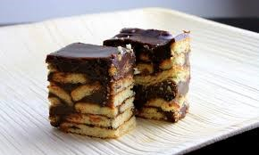

My Own Batik’s Cake Recipe
This is one of my favourite cake that is delicious and simple to make it!
Recipe ingredient
540g of marie biscuits
250g of unsalted butter
200g of sweetened condensed milk
1 cup of milo powder
1/2 cup of cocoa powder
3/4 cup of full cream milk
1/4 tsp
of salt
1/4 tsp of vanilla essence
Step 1: Crush 540g of Marie biscuits into small bits.
Step 2: Combine unsalted butter, sweetened condensed milk, milo powder, and cup of cocoa powder, full cream milk, salt and vanilla in
a pot over low heat. Let it melt, swirl and mix.
Step 3: Add the crushed Marie biscuits to the pot and mix well to ensure that the biscuits are properly coated.
Step 4: Spread
mixture uniformly on a 9×9 inch square pan. First, make sure you line the pan with the parchment paper. Then refrigerate for about 15 minutes and ready to eat!
